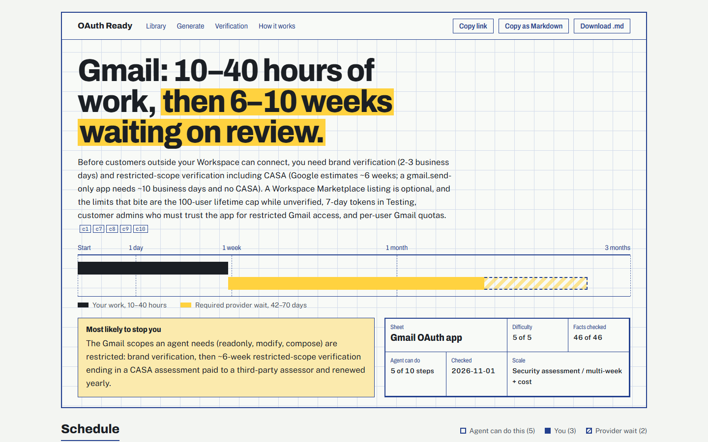

APM Integrations take-home submission · 1 November 2026
OAuth Ready: an hour, or six weeks?
Setup and approval guides for provider OAuth apps. Each guide answers, before anything else, how much of the path is your team's work, how much is waiting on the provider, and what is most likely to stop you. An agent can write a new guide for any app in about a minute, and every fact shows how we know it.
The question every guide answers, drawn on one scale for every app: your hands-on work, then the wait that blocks customers from connecting, then optional listings.
Start1 day1 week1 month3 months
1. The problem as I understood it
To let users connect Gmail, Slack or HubSpot to an AI agent, a developer first registers an OAuth app with that provider: the product's identity, with a client ID, secret, redirect URI and scopes. Every end user who clicks "Connect" creates a connection through that one app. Creating the app usually takes minutes. Getting it to the point where any customer can connect can take weeks: brand and scope verification, publisher verification, security assessments, and customers' own admin approval.
Composio's managed OAuth directory (read 1 November 2026) lists 387 OAuth toolkits: 125 where Composio supplies the OAuth app, and 262 where the developer must bring their own. Those 262 are this tool's core audience. Teams on managed apps hit the same path once they need their own branding, rate limits, or an enterprise security review.
The developer's real question is "an hour or six weeks?" Today they piece it together from scattered docs and forum posts, and can't tell how much is their work, how much is waiting, or what will block them. That uncertainty is what stops them planning a launch.
Scope I chose, and why
Answer the verdict first. Every guide opens with difficulty (fixed 1–5 rubric), hands-on hours, and the required provider wait as a separate number, plus the single most likely blocker.
Separate three things the docs mix up. (1) The wait required before any customer can connect through OAuth, the headline number; (2) optional listings such as marketplaces and certification, with their own waits; (3) limits after users connect: rate limits, install caps, customer admin consent.
Say who does each step. An agent (drafting, configuring redirect URIs and scopes, running test sign-ins), you (identity, company, payment, sign-in, judgment), or the provider (queues you can only wait on).
Be honest about evidence. Every claim is labelled by code, never by the model, so a guide can be trusted as far as its labels say and no further.
Out of scope on purpose: token handling and the connection runtime (Composio already does that), completing real approvals, and paid accounts.
2. What the experience does

A guide's first screen (Gmail). The verdict is the headline; the time axis shows 10–40 hours of work, then a 42–70 day required wait; the blocker and a title block with difficulty, facts checked and review date sit below.
Library
Six reviewed guides chosen for varied setup paths, plus guides written live by the agent. Every app is a row with its own bar on the same time scale, so "no wait" and "ten weeks" can be compared at a glance. Filters: no review wait, needs a review, security assessment.
Guide pages
Steps in three phases (create the app, test with your own account, go to production), each marked agent / you / provider. Then requirements, scopes that trigger review, optional listings, limits after users connect, fixes for when you get stuck, and the evidence. Share by link, copy as Markdown, or download.
Live generation
Type any app name or website. The run streams each stage as it happens, can be stopped, recovers if the connection drops, and ends on a shareable guide. Unknown names get a clear message, and a guessed different product gets "Did you mean …?" instead of a wrong guide.
Verification log
Every claim checked against the providers' own docs, with what the guide said before, what it says now, and the evidence. A "What we learned" section explains the patterns behind the corrections.
3. Real apps with different setup challenges
"Required wait" counts only what blocks any customer from connecting through OAuth. Optional listings and post-connection limits are shown separately on each guide.
App
The challenge
Difficulty
Required wait
GitHub
Instant self-serve. The friction is on the customer side: organizations block third-party OAuth apps until an owner approves.
2 of 5
none
Slack
No review to distribute, but unlisted apps get 1 request/min on message history, so message-reading agents are pushed toward the optional Marketplace (up to ~12 weeks).
2 of 5
none
HubSpot
Apps are now created with the HubSpot CLI; unlisted apps are capped at 25 installs, so a listing becomes practical for real customer bases.
2 of 5
none
Notion
Public connections need no review; installation scope can't be changed after creation; Marketplace listing is optional.
2 of 5
none
Microsoft Entra ID
Partner account verification for publisher verification; the real blocker is customer tenants' admin consent for mail, calendar and files.
3 of 5
3–7 days
Google (Gmail)
The scopes an agent needs are restricted: brand verification, then restricted-scope verification with a paid, yearly CASA security assessment.
5 of 5
42–70 days
Guides also written live by the agent and kept as examples: Xero, Linear, Calendly, and on the deployed site Pipedrive and Intuit QuickBooks. These were not reviewed by hand.
A live run, as it streamed
Excerpt from generating Pipedrive on the deployed site (1 November 2026); it took about a minute.
identify done Pipedrive · pipedrive.com (first run, before the labelling fix)
search done 14 official, 2 community results
fetch done 11 pages read (2 unreachable or empty)
probe Passed: Discovery document found at https://oauth.pipedrive.com/.well-known/oauth-authorization-server
probe Passed: Authorization endpoint https://oauth.pipedrive.com/oauth/authorize is live; an unknown client_id was redirected
write done 7 steps, 11 claims
enforce done tested 2 · sourced 11 · community 0 · uncertain 0
result pipedrive (saved, shareable link)
This run also exposed a labelling bug: Pipedrive's developer forum (devcommunity.pipedrive.com) was counted as an official source. It is now fixed in code, so forum subdomains count as community and shared docs platforms such as readme.io only count the vendor's own subdomain. The Pipedrive guide was then regenerated on the live site: its 3 forum claims are now labelled community and its 16 documentation claims official.
4. How agents are used
The live guide-writing agent
Identify the product and its official domains. Code rejects a product that doesn't match what was typed, so a typo never silently becomes a guide for a different app.
Search the provider's own domain (app registration, review and verification, scopes) plus one broad search for community reports (Tavily).
Read up to about 11 pages through a guarded fetcher: HTTPS only, public addresses only, IP checked at connection time, every redirect re-checked, size and time limits.
Probe live endpoints: the OAuth discovery document, and the authorize endpoint with a deliberately invalid client_id. The response proves the endpoint exists and shows how it rejects unknown clients, with no account needed.
Draft the guide from the fetched text and probe results only (Gemini, free tier, JSON output). The prompt keeps required waits, optional listings and post-connection limits apart.
Enforce evidence in code, then save and return a shareable link.
The free tier allows 20 requests per model per day, so the client rotates through six Gemini models, uses a lighter model for identification, and records which model drafted each guide. Runs can be stopped mid-way, and if the browser disconnects the server finishes the guide and the page opens it when ready.
Reviewer agents
Independent reviewer agents, one per guide, read each library guide and checked claims against the providers' own documentation, prioritising the verdict. Their findings were applied by a script, so every correction is recorded with what the guide said before. They were told the guides came from a small free model and to be skeptical.
Agents in building it
The app was built with Claude Code. Agents also reviewed the implementation plan before any code was written, and ran an independent design review of the guide page against a written direction contract. Credentials never went into the repository; the API keys live only in Vercel and a local, git-ignored file.
5. What was tested, what sources support, what remains uncertain
Evidence labels: assigned by code, never by the model
Tested
We ran it: an endpoint probe from this run, with the raw response recorded. The model can't mark anything tested.
Official source
The model cited a page and a quote; code found that quote word for word in the fetched page, on the provider's own domain.
Community source
Quote verified on a third-party page: forum, blog, integration vendor.
Uncertain
No matching quote or probe; the reason is shown. Unknown waits stay "unknown" instead of being guessed.
Checked against sources
172claims checked in two review rounds
110confirmed
50corrected and applied
12could not be verified
Round 1: GitHub, Slack, Gmail, 52 items (36 confirmed, 11 corrected, 5 unverifiable). Round 2: all six library guides, 120 items (74 confirmed, 39 corrected, 7 unverifiable). Details per claim at /verification.
What I learned and corrected
The agent's biggest error was treating optional marketplace reviews as OAuth approval. Slack (0–84 days), HubSpot (1–10) and Notion (1–7) all showed a required wait that was really an optional listing; none of them needs a provider review before customers can connect. This changed the product: the schema, the prompt and the page now keep required waits, optional listings and limits apart.
Gmail went the other way. The real required wait is 42–70 days, because the scopes an agent needs are restricted, and CASA is mandatory and paid, not optional.
Facts were mostly right; verdicts were where it went wrong. GitHub's and Microsoft's top blockers were wrong (customer org approval and tenant admin consent are the real ones), so reviewers now check the verdict first.
Quote checking catches invented sources but not misapplied ones. A real Google quote about Workspace Marketplace review was used as the OAuth verification timeline. Labels show where a quote came from, not whether it answers the question.
Docs go stale. HubSpot's guide described dashboard app creation, which HubSpot retired in 2026 in favour of the CLI.
What remains uncertain
Most review timelines and assessment costs aren't published; Google's verification FAQ is the exception. Where only community figures exist they are labelled community.
Whether Slack's 2025 rate limit applies to existing installs: the changelog and a community report disagree.
No hands-on setup attempts with real accounts were made, so "tested" covers endpoint probes only.
6. Trying it, running it, and its limits
Trying it live
Open /generate, type any app name or website (for example Zoom, Shopify or docusign.com), and watch the stages stream. A guide takes about 30–90 seconds. Stop ends a run without saving.
Apps already in the library open immediately. Each visitor can write 5 new guides per hour; if the free AI quota for the day is used up, the page says so in plain words.
Running it locally
npm install
cp .env.example .env.local # add GEMINI_API_KEY (free tier) and TAVILY_API_KEY (free tier)
npm run dev # http://localhost:3000
npm test # 11 tests: SSRF guard, quote matching, evidence labels, domain and product checks
Stack: Next.js and TypeScript, Zod schemas, Gemini (free tier) for writing, Tavily for search, Upstash Redis on Vercel for generated guides, stop flags and rate limits. The library and guide pages need no keys.
Limitations
Live guides are only as good as the docs they can read. Some sites block automated reading; the search engine's copy is then used and marked as such.
The free tier varies. When the stronger models are busy, a lighter model writes a thinner guide; the model is shown on each guide.
Quote checking can't catch a real quote used for the wrong question, which is why verdicts get a review pass.
Live-generated guides aren't reviewed by hand, and the page says so on every one.
No completed provider approvals or hands-on registrations. The natural next step is a few real setup attempts (a GitHub OAuth app, a Google project in Testing mode, a free Slack workspace) to add hands-on "tested" claims.
What I'd build next
Scale the library toward the 262 bring-your-own apps, with a review queue that checks verdicts first.
Re-check guides on a schedule, since provider docs change (HubSpot's did this year).
Let the agent take over the steps marked "agent can do", such as drafting the privacy policy, scope justifications and listing copy, once the developer is signed in.